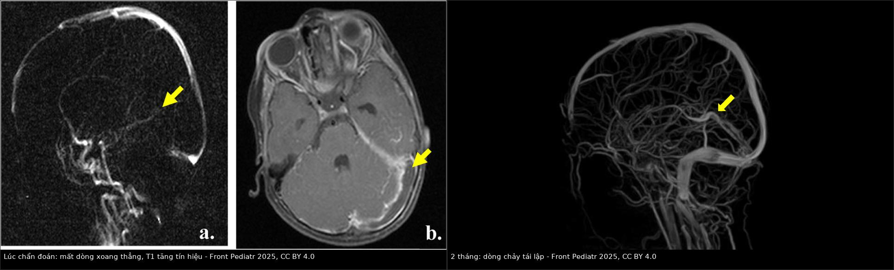
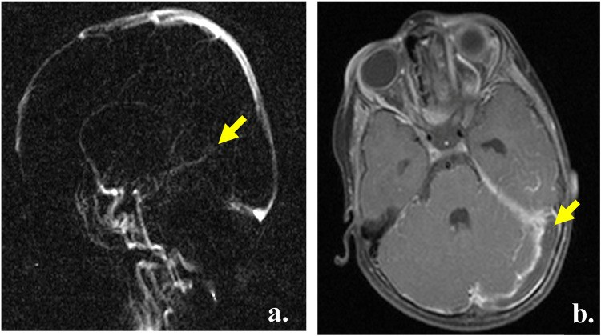
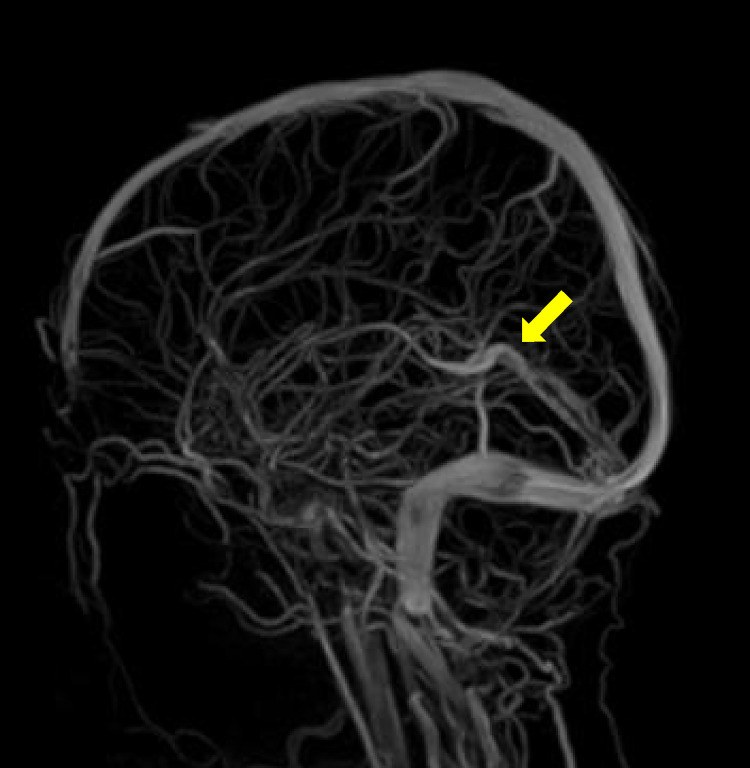
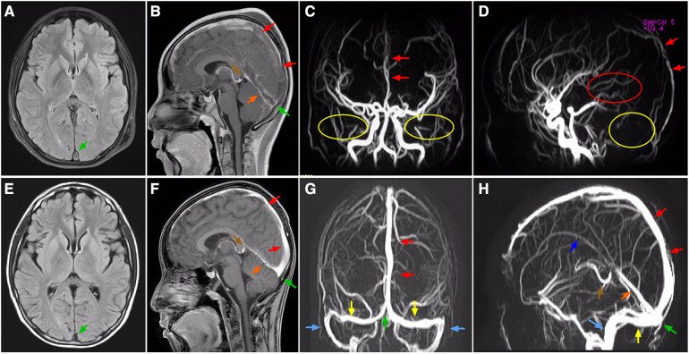

1781 — Huyết khối tĩnh mạch não ở trẻ thiếu máu / huyết tán / Cerebral venous sinus thrombosis in children with anemia or hemolysis
Tags: pattern:huyet-khoi-xoang pattern:khuyet-dong-chay pattern:nhoi-mau-tinh-mach pattern:xuat-huyet-kem vung:nao vung:xoang-tinh-mach protocol:MRV protocol:CTV protocol:MRI-nao protocol:SWI incidentaloma:khong
Mức chắc chắn (certainty): tổng hợp y văn (literature synthesis) — 2 ca nguyên văn có ảnh nhi: bé gái 2 tuổi thiếu máu thiếu sắt nặng (PMC11960503) và bé trai 13 tuổi hội chứng thận nhiễm mỡ không triệu chứng (PMC10196485), ghép với 2 loạt nhi (30 ca ICU — PMC13200926; 52 trẻ/78 lượt nhập viện — PMC9904331), 1 phân tích gộp về chống đông (PMC13553567), 1 loạt 43 trẻ viêm tai–xoang (PMC11706750) và 1 loạt người lớn về CVT + thiếu máu thiếu sắt (PMC13055716). Không suy rộng số liệu người lớn cho trẻ mà không ghi rõ.
1. Tổng quan bệnh học – cơ chế hình ảnh
Vì sao trẻ thiếu máu lại bị huyết khối tĩnh mạch não? Nghe nghịch lý — thiếu máu gợi ý "loãng máu" — nhưng đây là tam chứng Virchow đảo chiều theo hướng tăng đông:
- Ứ trệ (stasis) do lưu lượng tăng, không giảm. Thiếu máu làm giảm khả năng vận chuyển oxy → cơ chế bù trừ làm tăng lưu lượng máu não và tăng vận tốc dòng; vận tốc cao gây chảy rối (turbulent flow) và tăng ứng suất trượt trên nội mô. Hồng cầu thiếu sắt giảm khả năng biến dạng (deformability) → dòng chảy càng rối. Nghiên cứu Doppler ghi nhận 63% trẻ thiếu máu thiếu sắt có tăng vận tốc dòng máu não (PMC11960503).
- Tăng đông (hypercoagulability). Thiếu sắt làm giảm hoạt tính glutathione peroxidase và giảm hàng rào chống oxy hóa → tăng kết tập tiểu cầu; đồng thời erythropoietin tăng gây tăng tiểu cầu phản ứng (reactive thrombocytosis). Ca bé gái 2 tuổi: tiểu cầu cao nhất 832/nL; ca người lớn kinh điển trong y văn: 1.523.000/mm³ (PMC8608668). Yếu tố tăng đông thứ hai rất hay bị bỏ: lipoprotein (a) > 30 mg/dL — ca nhi có Lp(a) 86 mg/dL (tham chiếu 0–29,9), gấp ~3 lần ngưỡng nguy cơ (PMC11960503).
- Tổn thương nội mô (endothelial injury). Huyết tán (hồng cầu hình liềm, thalassemia, tán huyết miễn dịch) giải phóng hem tự do làm cạn nitric oxide, hoạt hóa nội mô và tăng bám dính; thiếu oxy mô do thiếu máu cộng thêm. Nhiễm trùng (viêm tai–xương chũm) là con đường nội mô – ứ trệ kinh điển khác ở trẻ.
Vì sao hình ảnh lại như vậy (vật lý từng chuỗi xung):
- CT không cản quang: cục máu đông có hồng cầu cô đặc, hematocrit tại chỗ cao → tăng đậm độ (hyperdense sinus) khoảng 50–80 HU so với máu đang chảy 30–40 HU. Nhưng ở trẻ, CT không cản quang có thể hoàn toàn bình thường — ca bé trai 13 tuổi nhập viện với chóng mặt, sốt, khó thở, CT sọ không cản quang bình thường và bị chẩn đoán nhầm là viêm phổi; CVST chỉ được phát hiện khi làm MRI/MRV (PMC10196485).
- CT có cản quang — dấu "empty delta": màng cứng (dura) quanh xoang ngấm cản quang, còn cục máu đông trong lòng xoang thì không → xoang hiện thành tam giác có viền sáng và lõi tối. Dấu này chỉ có khi đã tiêm cản quang và không phải lúc nào cũng thấy.
- MRI — tín hiệu đổi theo "tuổi" hemoglobin (đây là lý do phải đọc T1 và T2, không chỉ một chuỗi):
- cấp: deoxyhemoglobin → T1 đồng tín hiệu, T2 tối;
- bán cấp sớm: methemoglobin nội bào → T1 sáng, T2 tối;
- bán cấp muộn: methemoglobin ngoại bào → T1 sáng, T2 sáng;
- mạn: hemosiderin → T1 tối, T2 rất tối, có blooming trên SWI/GRE. Ca bé gái 2 tuổi: T1 tăng tín hiệu trong xoang ngang trái (bán cấp) (PMC11960503).
- MRV TOF (thời gian bay): tín hiệu đến từ spin mới chảy vào lát cắt; huyết khối chặn dòng → mất tín hiệu. Vì vậy MRV là chuỗi quyết định, nhưng có dương tính giả (dòng chảy trong mặt phẳng, hạt màng nhện (arachnoid granulation), xoang giảm sản) và âm tính giả khi huyết khối không tắc hoàn toàn (còn dòng ngoại vi).
- DWI/ADC: nhồi máu tĩnh mạch gây phù độc tế bào → DWI sáng, ADC thấp; phù mạch (vasogenic) thì không hạn chế khuếch tán — phân biệt với PRES.
- SWI/T2*: deoxyhemoglobin và hemosiderin thuận từ → blooming, phát hiện vi chảy máu và xuất huyết trong nhồi máu tĩnh mạch (30% ca ICU nhi có xuất huyết nội sọ kèm theo — PMC13200926).
Ngưỡng định lượng cần nhớ:
| Chỉ số | Số liệu | Nguồn |
|---|---|---|
| Tần suất CVST ở trẻ | 0,6–1,1/100.000 trẻ/năm; tăng 3,8%/năm (chuẩn hóa tuổi–giới); số nhập viện tăng 4,9%/năm | PMC13200926 |
| Thiếu máu trong CVST | 27% ca CVST có thiếu máu, liên quan mạnh hơn khi thiếu máu hồng cầu nhỏ; loạt 42 trẻ: 50% có thiếu máu ± hồng cầu nhỏ | PMC11960503 |
| Thiếu máu thiếu sắt toàn cầu | 40% trẻ dưới 5 tuổi; thiếu máu nói chung 32,9% dân số | PMC11960503 |
| CVT + thiếu máu thiếu sắt (người lớn) | 64/616 (10,4%); tổn thương nhu mô 54,7% vs 35,3% (p = 0,0025); nhồi máu tĩnh mạch 32,8% vs 14,5% (p = 0,0002); kết cục 1 năm không khác (aOR 0,60; 0,23–1,52) | PMC13055716 |
| Bệnh cảnh ICU nhi | 30 ca: 19 (63%) nguyên phát / 11 (37%) thứ phát; nhồi máu 47%, xuất huyết nội sọ 30%, tử vong 17% | PMC13200926 |
| Loạt đăng ký Ba Lan (nhi) | 52 trẻ / 78 lượt (2013–2020); 63,5% nam; tuổi trung bình 9,7 ± 5,8; nhóm vị thành niên 27%; 51% vào cấp cứu; nằm 10,5 ± 11,7 ngày | PMC9904331 |
| Hiệu quả chống đông (phân tích gộp nhi) | tử vong RR 0,14 (0,05–0,39) (4 nghiên cứu, n = 448); thiếu hụt thần kinh RD −0,13; tan huyết khối hoàn toàn/một phần RR 1,25; tái phát RD 0; chảy máu RD 0,03 | PMC13553567 |
| CVT sau viêm tai–xoang ở trẻ | 43 trẻ, 63% nam, tuổi trung bình 4; viêm xương chũm 54%; dùng chống đông 53%; tái thông 80% (33/41 sống) | PMC11706750 |
| Ca nhi thiếu máu thiếu sắt + Lp(a) | bé gái 2 tuổi; tiểu cầu tối đa 832/nL; Lp(a) 86 mg/dL (0–29,9); enoxaparin 1 mg/kg × 2/ngày, chỉnh theo anti-Xa; chống đông 1 năm; Hb khi ra viện 9,5 g/dL | PMC11960503 |
| Ca nhi hội chứng thận nhiễm mỡ | bé trai 13 tuổi; CVST + thuyên tắc phổi trong 5 ngày đầu bệnh; CT sọ không cản quang bình thường | PMC10196485 |
2. Mẫu hình + chẩn đoán phân biệt theo vị trí (gamut)
Mẫu hình chung: trẻ đau đầu mới xuất hiện hoặc nặng dần + co giật/buồn nôn + một bệnh nền tăng đông (thiếu máu thiếu sắt, huyết tán, hội chứng thận nhiễm mỡ, đang dùng asparaginase, viêm tai–xương chũm) — và hay có CT sọ không cản quang bình thường.
Ba câu hỏi phải trả lời trước khi kết luận:
- Hệ nào bị tắc: nông (xoang dọc trên, ngang, sigma) hay sâu (xoang thẳng, tĩnh mạch não trong, tĩnh mạch Galen)? — quyết định tiên lượng.
- Có nhồi máu/xuất huyết nhu mô kèm theo không? — quyết định có cần hồi sức tích cực/phẫu thuật giải ép.
- Nguyên nhân nền có điều trị được không? — thiếu sắt (bù sắt), huyết tán (kiểm soát bệnh nền), nhiễm trùng (kháng sinh/dẫn lưu).
Gamut theo vị trí:
- Xoang dọc trên (superior sagittal sinus): vị trí hay gặp nhất ở trẻ; đau đầu lan tỏa, co giật, nhồi máu cạnh đường giữa hai bên (kỳ lạ với đột quỵ động mạch).
- Xoang ngang – sigma: thường sau viêm tai giữa/xương chũm; đau sau tai, sốt; huyết khối lan xuống bóng cảnh (jugular bulb).
- Hệ sâu (xoang thẳng, tĩnh mạch não trong, tĩnh mạch Galen): nhồi máu đồi thị hai bên, rối loạn ý thức, tiên lượng nặng nhất; trên hình ảnh: mất dòng xoang thẳng trên MRV + T1 sáng (ca bé gái 2 tuổi: mất dòng xoang thẳng và tĩnh mạch não — PMC11960503).
- Tĩnh mạch vỏ não đơn độc (isolated cortical vein thrombosis): đau đầu + co giật, MRV xoang bình thường → dễ bỏ sót; cần T1 mạch máu/SWI và đọc kỹ tĩnh mạch vỏ.
- Xoang hang (cavernous sinus): lồi mắt, phù mi, liệt dây III/IV/V1–V2, sốt — bệnh cảnh nhiễm trùng vùng mặt/xoang (khác hẳn nhóm trên).
- Bóng cảnh – tĩnh mạch cổ trong: huyết khối lan xuống (Lemierre) — sốt cao, đau cổ, ổ áp-xe vùng họng.
Gamut theo nguyên nhân (chọn xét nghiệm theo hàng này):
- Thiếu máu thiếu sắt: trẻ uống nhiều sữa bò (ca 2 tuổi), vị thành niên nữ rong kinh; xét nghiệm: ferritin, MCV, TIBC, phết máu.
- Huyết tán: hồng cầu hình liềm, thalassemia, thiếu G6PD, tán huyết miễn dịch — bilirubin gián tiếp, LDH, haptoglobin, phết máu.
- Bệnh nền tăng đông khác: hội chứng thận nhiễm mỡ (mất antithrombin qua nước tiểu), asparaginase/steroid trong ALL, béo phì, thuốc tránh thai, COVID-19.
- Nhiễm trùng: viêm tai–xương chũm, viêm xoang, viêm màng não, nhiễm khuẩn huyết.
- Di truyền: yếu tố V Leiden, prothrombin G20210A, thiếu protein C/S, antithrombin, Lp(a) > 30 mg/dL (ca nhi: 86 mg/dL — PMC11960503).
- Cơ học: chấn thương đầu, mất nước, đặt catheter tĩnh mạch trung tâm.
3. Bảng so sánh phân biệt (ma trận đối chiếu)
| Thực thể (entity) | Hình ảnh điển hình | Chốt vào (rule-in) | Chốt loại (rule-out) | Gợi ý xác nhận |
|---|---|---|---|---|
| CVST | CT không cản quang: xoang tăng đậm độ; CT có cản quang: empty delta; MRI: T1/T2 đổi theo tuổi máu; MRV/CTV: mất tín hiệu xoang | Khuyết dòng chảy trong xoang trên MRV/CTV + nhồi máu không theo lãnh thổ động mạch | Xoang giảm sản/hạt màng nhện (mất tín hiệu nhưng không có nhồi máu, không đau đầu cấp) | MRV TOF + T1 mạch máu/SWI; CTV khi cấp cứu |
| Nhồi máu động mạch (AIS) | Vùng theo lãnh thổ (MCA/ACA/PCA), tam giác vỏ–nhân trên DWI; mạch lớn tắc trên MRA | Nhồi máu theo lãnh thổ + mạch động mạch tắc | Xoang bình thường trên MRV; tổn thương không theo lãnh thổ | MRA/CTA, siêu âm Doppler |
| PRES | Phù mạch (vasogenic), T2/FLAIR sáng vùng chẩm–đỉnh hai bên, DWI không hạn chế, có thể xuất huyết | Phù đối xứng sau, hồi phục sau kiểm soát huyết áp/nguyên nhân | MRV bình thường; ADC không thấp | MRI + MRV; theo dõi huyết áp |
| Tăng áp lực nội sọ vô căn (IIH) | Não thất bình thường/khe, phù đĩa thị, xoang ngang hẹp (do chèn ép, không phải huyết khối) | Đau đầu + phù gai + MRV xoang còn dòng | Huyết khối thật (mất dòng + T1 sáng trong xoang) | Chọc dò dịch não tủy sau khi loại CVST |
| Viêm màng não/viêm não | Màng não ngấm cản quang, mủ trong khoang dưới nhện, DWI hạn chế vỏ não | Sốt + cứng gáy + dịch não tủy viêm | CVST đơn thuần (dịch não tủy không viêm, không sốt) | Chọc dò dịch não tủy (khi an toàn), cấy |
| Huyết khối xoang do nhiễm trùng (viêm xương chũm) | Xoang sigma mất dòng + viêm xương chũm cùng bên | Viêm tai + đau sau tai + sốt + mất dòng xoang sigma | CVST vô khuẩn (không ổ nhiễm trùng) | CT xương thái dương, MRI, cấy |
| Huyết khối tĩnh mạch vỏ não đơn độc | Xoang lớn còn dòng; tĩnh mạch vỏ T1 sáng, SWI tối, nhồi máu vỏ hình ngón tay | Đau đầu + co giật + MRV xoang bình thường nhưng có nhồi máu vỏ | CVST xoang lớn (mất dòng xoang) | MRI T1 mạch máu, SWI, DSA khi còn nghi |
| Xuất huyết nội sọ tự phát | Máu tụ, không có khuyết dòng xoang | Máu tụ đơn thuần, xoang còn dòng | CVST có xuất huyết (30% ca ICU) — vẫn có thể chống đông | MRV/CTV bắt buộc khi xuất huyết ở trẻ |

Trái: (a) MRV TOF sagittal — mất tín hiệu xoang thẳng và tĩnh mạch não (mũi tên vàng); (b) T1 axial — huyết khối tăng tín hiệu lan vào xoang ngang trái. Phải: MRV sau 2 tháng chống đông — dòng chảy tái lập ở xoang thẳng và tĩnh mạch não. Nguồn: Front Pediatr 2025;13:1449323 (PMC11960503), CC BY 4.0. Ảnh ghép letterbox, giữ nguyên tỷ lệ.Ba dấu hiệu quyết định trên ảnh
- Mất tín hiệu một đoạn xoang có "đầu–cuối" rõ (abrupt cut-off) trên MRV/CTV — khác với mất tín hiệu lan tỏa, mờ của dòng chảy trong mặt phẳng.
- T1 tăng tín hiệu trong lòng xoang: chứng minh có cục máu đông (methemoglobin), không chỉ là hiệu ứng dòng chảy.
- Nhồi máu không theo lãnh thổ động mạch: đồi thị hai bên, thùy chẩm/đỉnh cạnh đường giữa — bắt buộc nghĩ tĩnh mạch.
4. Protocol chụp + hệ phân độ/điểm chuẩn hóa
4.1 Protocol hình ảnh
- Bước 1 — MRI sọ + MRV TOF (không cản quang) là chuỗi đầu tay ở trẻ đau đầu cấp + bệnh nền tăng đông: T1, T2, FLAIR, DWI/ADC, SWI/GRE + MRV TOF 2D/3D (đọc cả xoang và tĩnh mạch vỏ). Ở trẻ nhỏ cần an thần — cân nhắc lợi ích vì đây là chẩn đoán "đổi điều trị".
- Bước 2 — CT/CTV khi không hoãn được (trẻ không hợp tác, cấp cứu, nghi xuất huyết lớn): CT không cản quang để loại xuất huyết + CTV (không chỉ CT) để thấy khuyết dòng xoang. Lưu ý: CT không cản quang bình thường không loại trừ CVST (ca 13 tuổi — PMC10196485).
- Bước 3 — Đánh giá nhu mô: DWI/ADC (nhồi máu tĩnh mạch), SWI (xuất huyết/vi chảy máu), T2/FLAIR (phù). Nhồi máu đồi thị hai bên = huyết khối hệ sâu.
- Bước 4 — Xét nghiệm nguyên nhân: công thức máu (Hb, MCV, tiểu cầu), ferritin/TIBC/sắt, hồng cầu lưới, bilirubin/LDH/haptoglobin, Lp(a), protein C/S, antithrombin, yếu tố V Leiden/PT G20210A, kháng thể kháng phospholipid; tổng phân tích nước tiểu + albumin (hội chứng thận nhiễm mỡ); cấy máu/CT xương thái dương khi nghi nhiễm trùng.
- Bước 5 — Theo dõi hình ảnh: chụp lại ~2 tháng và 1 năm; tái thông có thể không hoàn toàn mà bệnh nhân vẫn hồi phục tốt (ca nhi: sau 1 năm còn huyết khối bám thành xoang thẳng và xoang ngang trái — PMC11960503).
4.2 Chống đông — ngưỡng và thời gian
| Tình huống | Xử trí theo nguồn |
|---|---|
| CVST ở trẻ nói chung | Có chống đông (LMWH/heparin) — phân tích gộp: giảm tử vong RR 0,14 (0,05–0,39), giảm thiếu hụt thần kinh, tăng tái thông, không tăng chảy máu có ý nghĩa (PMC13553567) |
| Liều khởi đầu (ca nhi có kiểm chứng) | enoxaparin 1 mg/kg × 2/ngày, chỉnh theo anti-Xa (PMC11960503) |
| Có xuất huyết nhu mô kèm theo | Không phải chống chỉ định tuyệt đối — 30% ca ICU nhi có xuất huyết nội sọ vẫn được điều trị; quyết định theo cân nặng tổn thương và thần kinh (PMC13200926, PMC13553567) |
| Thời gian | 3 tháng cho ca đơn giản; 1 năm khi huyết khối lan rộng + ≥ 2 yếu tố tăng đông (ca nhi: 1 năm) (PMC11960503) |
| CVT do viêm tai–xương chũm không có triệu chứng thần kinh | Chống đông không bắt buộc cho mọi ca — 43 trẻ: tái thông 80%, khác biệt không có ý nghĩa theo dùng/không dùng chống đông (PMC11706750) |
| Điều trị nguyên nhân | Bù sắt (uống/tĩnh mạch) ± truyền hồng cầu khi thiếu máu thiếu sắt nặng; dinh dưỡng (giảm sữa bò); kiểm soát huyết tán; kháng sinh/dẫn lưu ổ nhiễm trùng |
flowchart TD
A[Trẻ đau đầu mới/nặng dần + bệnh nền tăng đông] --> B{Co giật, rối loạn ý thức, dấu thần kinh khu trú?}
B -->|Có| C[CT không cản quang: loại xuất huyết] --> D[CTV hoặc MRI + MRV cấp]
B -->|Không| E[MRI sọ + MRV TOF: T1, T2, FLAIR, DWI, SWI]
E --> F{Khuyết dòng chảy trong xoang?}
F -->|Không, nhưng nhồi máu vỏ não| G[Đọc tĩnh mạch vỏ: T1 mạch máu, SWI]
F -->|Có| H[Đánh giá hệ nông hay sâu + nhồi máu/xuất huyết nhu mô]
H --> I[Khởi động chống đông LMWH 1 mg/kg x2, chỉnh anti-Xa]
I --> J[Tìm nguyên nhân: ferritin, MCV, tiểu cầu, Lp-a, protein C/S, nước tiểu, cấy]
J --> K{Thiếu máu thiếu sắt?}
K -->|Có| L[Bù sắt + truyền máu nếu nặng + giảm sữa bò]
K -->|Không| M[Tầm soát huyết tán/di truyền/nhiễm trùng]
L --> N[Chụp lại 2 tháng và 1 năm; thời gian chống đông 3 tháng hoặc 1 năm]
M --> N
5. Biến thể bình thường và cạm bẫy
Biến thể bình thường dễ nhầm:
- Hạt màng nhện (arachnoid granulation): khuyết nhỏ, bờ nhẵn, nằm sát thành xoang, thường ở xoang dọc trên/ngang; không có nhồi máu, không đau đầu cấp — đừng gọi huyết khối.
- Xoang ngang giảm sản một bên / bất đối xứng: bẩm sinh, thường gặp; không mất tín hiệu có đầu–cuối rõ.
- Mất tín hiệu do dòng chảy trong mặt phẳng trên MRV 2D: đổi mặt phẳng/3D rồi đọc lại.
- Xoang ngang hẹp trong IIH: hẹp do chèn ép từ ngoài (tăng áp lực nội sọ), xoang vẫn có dòng, có phù đĩa thị — không phải huyết khối.
Cạm bẫy (pitfall):
- Tin vào CT không cản quang bình thường: ca 13 tuổi bị chẩn đoán nhầm viêm phổi vì CT sọ bình thường (PMC10196485). Ở trẻ có bệnh nền tăng đông + đau đầu mới, phải làm MRV/CTV.
- Bỏ sót huyết khối hệ sâu: nhồi máu đồi thị hai bên mà chỉ nghĩ động mạch → bỏ lỡ xoang thẳng/tĩnh mạch não trong.
- Bỏ sót tĩnh mạch vỏ đơn độc: MRV xoang "bình thường" mà bệnh nhân co giật + nhồi máu vỏ hình ngón tay → cần T1 mạch máu/SWI.
- "Thiếu máu thì không thể huyết khối": tư duy này làm chậm chẩn đoán; thiếu máu thiếu sắt là yếu tố nguy cơ đã được công nhận, đặc biệt khi có tăng tiểu cầu phản ứng.
- Bỏ qua Lp(a) và tăng đông di truyền: ca nhi có Lp(a) 86 mg/dL — nếu không tìm, sẽ không giải thích được vì sao trẻ 2 tuổi đã huyết khối.
- Chọc dò dịch não tủy trước khi chụp: nguy cơ thoát vị não khi có nhồi máu/xuất huyết lớn — chụp trước, chọc sau.
- D-dimer bình thường không loại trừ: trong huyết khối bán cấp/mạn, D-dimer có thể bình thường; nghiên cứu người lớn cho thấy điểm lâm sàng thấp + D-dimer < 500 µg/L mới đạt độ nhạy 92,5% để loại trừ (PMC13453274) — không dùng đơn độc ở trẻ.
- Ngừng chống đông quá sớm vì "MRV còn khuyết": hồi phục lâm sàng có thể xảy ra dù không tái thông hoàn toàn (ca nhi còn huyết khối bám thành sau 1 năm vẫn hồi phục tốt — PMC11960503).
6. Tự lượng giá — Blind Quiz
Ca 1 — Bé gái 2 tuổi, ăn nhiều sữa bò, da xanh, đau đầu rồi co giật. Ảnh dưới đây chụp gì và bạn kết luận gì?

- Gợi ý lâm sàng: tiểu cầu tăng cao, Lp(a) 86 mg/dL, không có yếu tố di truyền nào khác.
- Câu hỏi: Dấu hiệu bất thường ở đâu? Vì sao phải làm cả MRV và T1? Chẩn đoán và hướng xử trí ban đầu?
Bấm để hiện đáp án (findings + chẩn đoán)
- Dấu hiệu: (a) MRV TOF sagittal — mất tín hiệu xoang thẳng và các tĩnh mạch não (mũi tên vàng); (b) T1 axial — tăng tín hiệu trong xoang ngang trái, tức có cục máu đông (methemoglobin), không chỉ là hiệu ứng dòng chảy.
- Chẩn đoán: huyết khối xoang tĩnh mạch não trên nền thiếu máu thiếu sắt nặng + tăng tiểu cầu phản ứng + Lp(a) cao. Vì sao: thiếu sắt → tăng kết tập tiểu cầu và tăng tiểu cầu phản ứng; Lp(a) ức chế tiêu sợi huyết; cả hai tạo trạng thái tăng đông.
- Xử trí: enoxaparin 1 mg/kg × 2/ngày (chỉnh anti-Xa) + truyền hồng cầu/sắt tĩnh mạch + sắt uống; chống đông 1 năm vì huyết khối lan rộng + 2 yếu tố nguy cơ; chụp lại ở 2 tháng và 1 năm.
- Nguồn ảnh: Front Pediatr 2025;13:1449323 (PMC11960503), Fig. 1, CC BY 4.0.
Ca 2 — Cùng bệnh nhân sau 2 tháng chống đông. Ảnh MRV này nói gì về hiệu quả điều trị, và có được ngừng thuốc không?

- Gợi ý: lâm sàng đã cải thiện rõ trong 2 ngày đầu điều trị.
- Câu hỏi: Dòng chảy đã tái lập chưa, ở đâu? Có được ngừng chống đông ở thời điểm này không?
Bấm để hiện đáp án
- Dấu hiệu: MRV TOF sagittal — dòng chảy đã tái lập ở xoang thẳng và các tĩnh mạch não (mũi tên vàng), tương ứng cải thiện lâm sàng.
- Trả lời: chưa ngừng — tái thông một phần chưa đủ; ca này còn huyết khối bám thành ở xoang thẳng và xoang ngang trái đến 1 năm; chống đông được duy trì 1 năm rồi mới cân nhắc ngừng.
- Bài học: hồi phục lâm sàng ≠ tái thông hoàn toàn, và còn khuyết trên MRV ≠ thất bại điều trị.
- Nguồn ảnh: Front Pediatr 2025;13:1449323 (PMC11960503), Fig. 2, CC BY 4.0.
Ca 3 — Bé trai 13 tuổi, chóng mặt + sốt + khó thở, phù không rõ. CT sọ không cản quang bình thường. Ảnh MRI/MRV dưới đây cho thấy gì?

- Gợi ý: xét nghiệm có giảm albumin máu và protein niệu lượng lớn; đồng thời có thuyên tắc phổi.
- Câu hỏi: Tổn thương tĩnh mạch ở đâu? Vì sao CT không cản quang bình thường mà vẫn có huyết khối? Nguyên nhân nền?
Bấm để hiện đáp án
- Dấu hiệu: MRI FLAIR/T1 sau tiêm và MRV — khuyết đầy (filling defect) ở xoang dọc trên, xoang thẳng, tĩnh mạch Galen và torcula, mất tín hiệu dòng ở xoang sigma và xoang ngang hai bên (ô vàng); kèm hình ảnh thuyên tắc phổi trên CTA ngực (Fig. 1 của bài gốc).
- Chẩn đoán: CVST + thuyên tắc phổi trên nền hội chứng thận nhiễm mỡ không triệu chứng — mất antithrombin qua nước tiểu gây tăng đông, trong khi không có phù nên dễ bị chẩn đoán nhầm là viêm phổi.
- Vì sao CT bình thường: huyết khối không gây tăng đậm độ rõ ở thì sớm và CT không cản quang không đánh giá được dòng chảy xoang — cần MRI/MRV.
- Nguồn ảnh: Front Pediatr 2023;11:1169116 (PMC10196485), Fig. 2, CC BY 4.0.
Bài liên quan chéo
- 216 – Dị dạng mạch não & huyết khối xoang — nền tảng hình ảnh CVST (empty delta, MRV) trong bối cảnh mạch máu não.
- 682 – Bệnh mạch não & quá tải sắt ở thalassemia — nhánh huyết tán/thalassemia: T2*/QSM, đột quỵ im lặng.
- 661 – Đột quỵ hồng cầu hình liềm ở trẻ — huyết tán + thiếu máu não cấp, nơi CVST là hàng phân biệt.
- 652 – Đột quỵ mạch máu não nhi — phân biệt nhồi máu động mạch với nhồi máu tĩnh mạch.
- 676 – RCVS ở trẻ em — đau đầu sét đánh + co thắt mạch, khác CVST về hình ảnh.
- 219 – PRES & RCVS — phù mạch không hạn chế khuếch tán, phân biệt với nhồi máu tĩnh mạch.
- 684 – Tăng triglyceride do asparaginase ở trẻ ALL — cùng nhóm "trẻ ung thư có biến chứng huyết khối do thuốc".
- 238 – Lemierre & huyết khối tĩnh mạch cảnh trong — huyết khối tĩnh mạch lan từ ổ nhiễm trùng vùng cổ.
- 1783 – Huyết khối xoang sau chấn thương đầu ở trẻ — nhánh chấn thương: vỡ xương bắt ngang xoang, NCCT 61 HU, CTV 20–25 giây, chống đông khi có xuất huyết nội sọ.
Ảnh
1781_huyet-khoi-xoang_TOF-va-T1-PMC11960503-Fig1.jpg— MRV TOF mất dòng xoang thẳng + T1 huyết khối xoang ngang (CC BY 4.0).1781_tai-thong-sau-2-thang_MRV-PMC11960503-Fig2.jpg— MRV sau 2 tháng: dòng chảy tái lập (CC BY 4.0).1781_huyet-khoi-nhieu-xoang_MRI-MRV-PMC10196485-Fig2.jpg— MRI/MRV nhiều xoang ở bé trai 13 tuổi (CC BY 4.0).composite_1781_luc-chan-doan-va-2-thang.jpg— ảnh ghép letterbox từ 2 ảnh cùng bài PMC11960503.- Số liệu phân tích gộp (PMC13553567), loạt ICU (PMC13200926), loạt viêm tai (PMC11706750), loạt người lớn IDA (PMC13055716): chỉ trích số liệu (CC BY-NC-ND/CC BY-NC), không tải ảnh.
Không dùng để chẩn đoán độc lập khi chưa có người hướng dẫn.